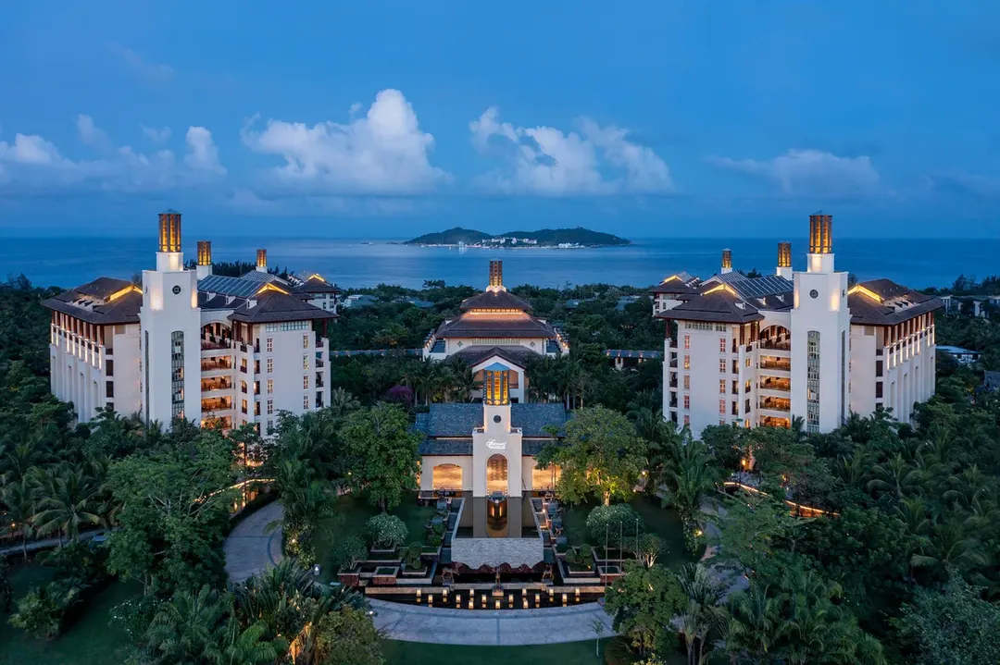
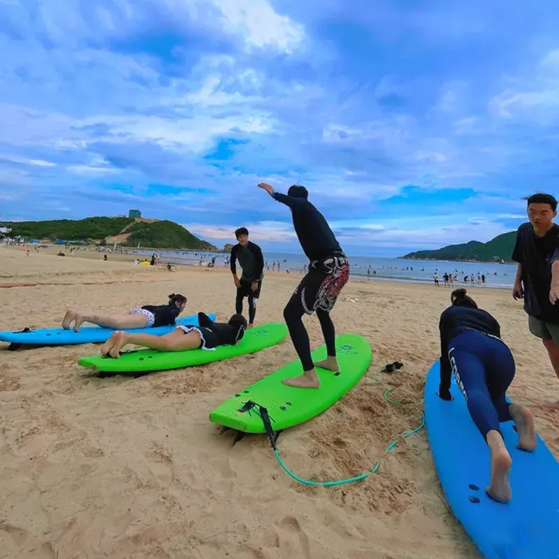
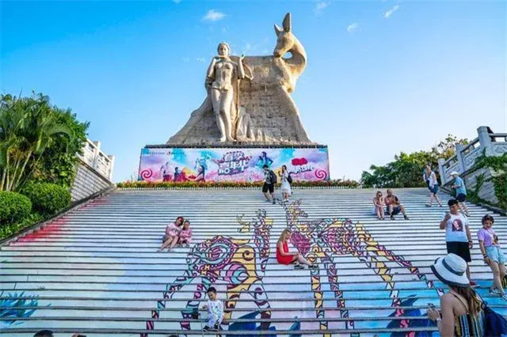
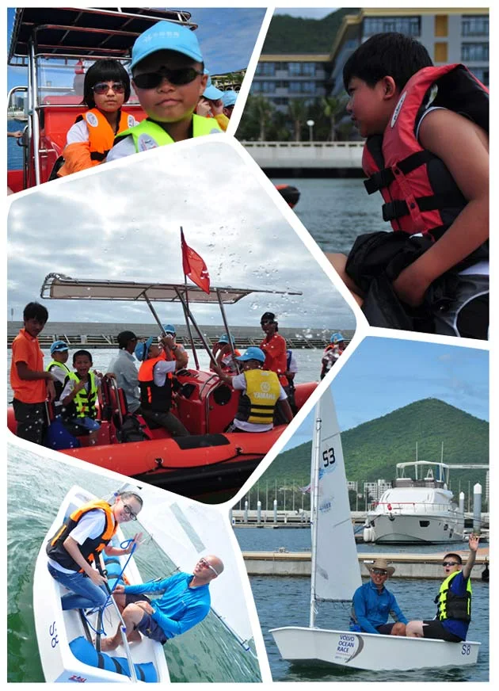
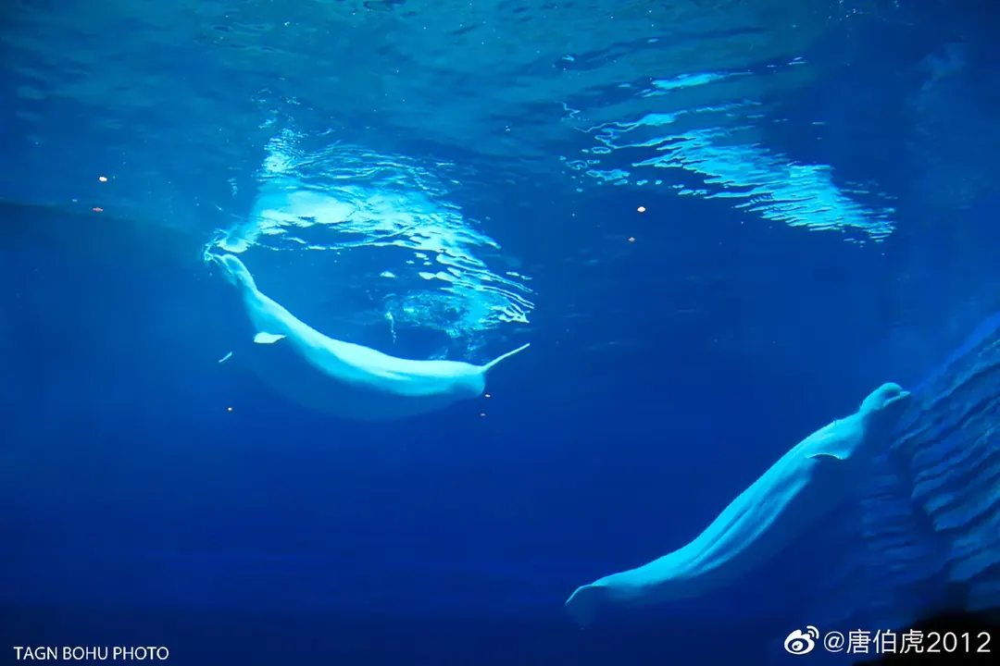
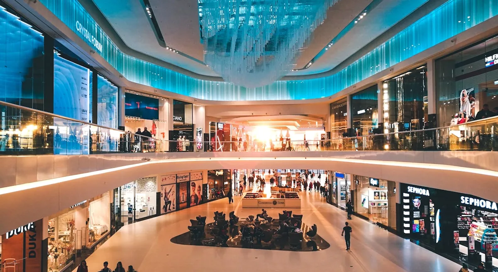
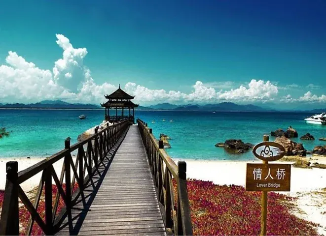
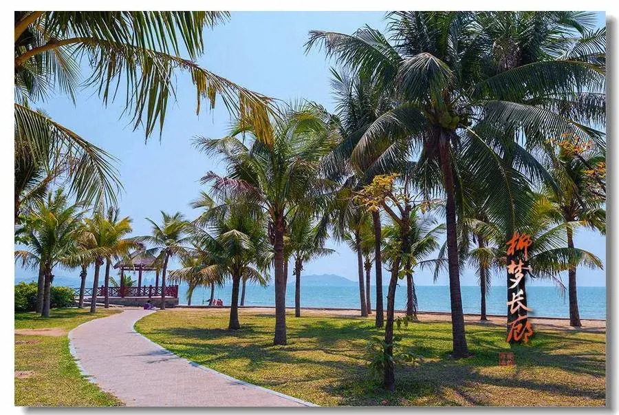
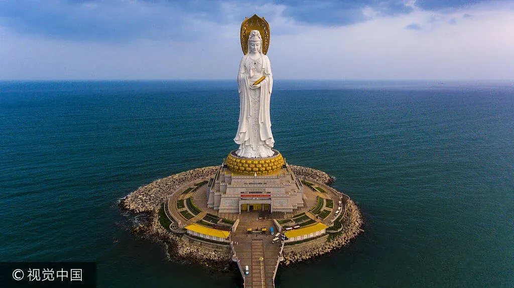

🔍 三亚后半程 11 大景点与度假项目深度评测
📊 11 大景点与度假项目横向对比决策矩阵
以海棠湾熹棠费尔蒙为基点，综合 4大2小 MPV 自驾半径、门票投入、孩子体验与防晒避坑综合评定：
| 项目 / 景点名称 | 类型标签 | 距费尔蒙车程 | 4大2小费用预估 | 推荐指数 | 亲子核心获得感与亮点 | 避坑提醒与裁决建议 |
|---|---|---|---|---|---|---|
| 01 海棠湾熹棠费尔蒙酒店 (酒店核心游玩 & 经典演艺) | 奢华度假/演艺 | 0 km (下榻地) | 0 元 (住客免费尊享演出与运河木船) | ★★★★★ | 全国内陆运河第一奢华度假酒店。拥有1200米海水韵河、百年纯手工木雕石库门古建、超大户外热带... | 海棠湾大本营王牌体验！无需奔波，零车程消耗，兼顾视觉震撼与慢活度假，必须拉满！ |
| 02 皇后湾 / 后海村 / 铁炉港 | 自然探索/运动 | 11 km (15分钟) | 0 元 (赶海免费) / 冲浪约 600 元 | ★★★★★ | 半月形野趣海湾，背靠海棠湾原生椰林与礁石岬角。海水浅而清澈，浪花柔和雪白，既有原生态渔村的生... | 海棠湾后花园，离费尔蒙仅一脚油门，零赶路负担，兼具0元赶海与超酷冲浪，亲子综合体验第一名！ |
| 03 亚龙湾热带天堂森林公园 | 森林雨林/探险 | 30 km (35分钟) | 约 1,180 元 (4大2小门票+索桥+电瓶车) | ★★★★☆ | 国家级热带雨林自然保护区，电影《非诚勿扰2》取景地。山峦苍翠，依山傍海，登顶可饱览天下第一湾... | 三亚陆地自然风景的代表作，路线完全顺路，兼具刺激感与登高视觉盛宴，推荐安排一个半天！ |
| 04 鹿回头风景区 | 城市全景/晚霞 | 36 km (40分钟) | 约 168 元 (大门票免费！仅观光电瓶车费) | ★★★★☆ | 三亚市区制高点，三面临海。以黎族美丽的爱情神话传说得名，是俯瞰三亚全城风貌、三亚湾长滩、大东... | 花极少的钱看极震撼的城市山海日落与夜景，傍晚时段无暴晒，强烈推荐作为某一天的收尾点！ |
| 05 半山半岛帆船港 | 航海体验/出海 | 38 km (42分钟) | 陆上 0 元 / 包帆船出海约 700~900 元 | ★★★★☆ | 海南唯一获得国际金锚码头认证的专业游艇港，停靠上百艘白色桅杆帆船。红顶欧式小镇、白色灯塔与蔚... | 想让孩子体验真正航海文化、收获小舵手成就感的不二之选，可与鹿回头同区域联动顺路游玩！ |
| 06 三亚·亚特兰蒂斯 (水世界 & 失落的空间水族馆) | 主题乐园/水族馆 | 8 km (10分钟) | 水族馆约 900 元 / 水世界约 1,800 元 (4大2小) | ★★★★☆ | 海棠湾地标级海洋主题度假殿堂。拥有汇聚86,000尾海洋生物的巨幕水族馆，以及全年恒温的超大... | 离费尔蒙仅8公里超近！中午天气炎热不想在户外，带孩子去水族馆看白鲸是极佳的高品质室内选择！ |
| 07 cdf 三亚国际免税城 | 免税购物/室内避暑 | 10 km (12分钟) | 0 元 (免门票自由参观，购物消费另计) | ★★★★☆ | 全球最大单体免税店，外观如一朵盛开的海棠花，造型充满未来科技感。A/B/C区汇聚全球顶级品牌... | 就在费尔蒙家门口！不花门票钱，既能满足大人免税采购心愿，又能让全家在正午避开烈日享受美食与冷气！ |
| 08 蜈支洲岛旅游区 | 海岛观光/潜水 | 13 km (18分钟) | 约 780 元 (4大2小门船票) / 水上项目另计 | ★★★☆☆ | 中国第一潜水基地，三亚名气最大的5A级海岛。海水透光率达27米，沙质雪白，拥有标志性情人桥、... | 若未去分界洲则为必选；但在已有分界洲岛的前提下，无需再重复耗费整整一天时间和门票重复登岛。 |
| 09 西岛海洋文化旅游区 | 文艺海岛/慢生活 | 55 km (1小时15分) | 约 510 元 (4大2小门船票) + 岛上租电瓶车 | ★★★☆☆ | 拥有400多年历史的珊瑚石原生态渔村，充满烟火气与慢调文艺感。牛王岛由栈桥相连，适合租一辆黄... | 景色优美，但位于全岛极西侧，往返车程过长，亲子性价比不如家门口的皇后湾与森林公园，列为次优备选。 |
| 10 椰梦长廊 (三亚湾滨海景观大道) | 自驾大道/落日 | 42 km (50分钟) | 0 元 (开放式市政景观带) | ★★★☆☆ | 全长20公里的三亚湾椰林海岸大道，以壮观的夕阳落日和绵延草坪椰树闻名。被誉为三亚最亲民的城市... | 无需专程安排半天跑去三亚湾；在 Day 6 赶往凤凰机场时顺路自驾车览打卡即可，既防虫咬又省时间！ |
| 11 南山文化旅游区 | 文化古迹/祈福 | 78 km (1小时45分) | 约 700 元 (4大2小门票+电瓶车) | ★★☆☆☆ | 国家5A级宗教文化景区，拥有高108米的世界级海上三面观音圣像，气势雄伟庄严。南山寺背依南山... | 更适合长辈祈福参拜；对于咚咚和甜心为主角的亲子家庭而言，长途奔波+高温暴晒，亲子综合体验垫底，不推荐专程前往。 |
🖼️ 11 大景点实景图文卡片与多图画廊
每张卡片均精选 3~4 张代表性游玩照片。点击任意图片或缩略图，即可弹出全屏画廊，支持双指缩放、左右滑动查看高清细节！
🔥 顶级演艺 · 奢华度假

01 海棠湾熹棠费尔蒙酒店 (酒店核心游玩 & 经典演艺)
📍 海棠湾海棠北路 · 我们的下榻大本营
顺路与车程0 km (下榻地)
孩子体验感★★★★★
门票总支出0 元 (住客免费尊享演出与运河木船)
景色特点：全国内陆运河第一奢华度假酒店。拥有1200米海水韵河、百年纯手工木雕石库门古建、超大户外热带恒温泳池群、绿野仙踪孔雀园与儿童沙滩俱乐部。
🎯 亲子核心玩法与成就感：
- ① 18:30 韵河游廊日落降旗仪式：伴着清扬的黎族古乐与歌剧唱腔，在运河码头见证南国日落，仪式感十足，给孩子讲海南黎族古老传说！
- ② 19:30 滨水石库门火舞表演：杂技演员与炽热烈火在百年古宅前腾跃共舞，水波倒影，火光四溅，视觉震撼度爆棚，咚咚和甜心必将目不转睛！
- ③ 韵河木船泛舟漫游：带孩子乘坐雕花摇橹木船穿行于热带雨林园林与古建廊桥之间，水清见底，两岸孔雀啼鸣，宛如穿越仙境。
- ④ 儿童水上滑梯与萌宠互动：超大泳池配备儿童水上滑梯，草坪上成群孔雀漫步，小朋友可带小面包近距离观察拍照。
💡 亲子贴士与避坑：火舞表演建议提前15分钟（19:15）到石库门滨水台阶占据前排中央视角；运河泛舟可在入住办手续时向前台或礼宾部预约合适时段。
✅ 综合裁决：海棠湾大本营王牌体验！无需奔波，零车程消耗，兼顾视觉震撼与慢活度假，必须拉满！
🔥 亲子首推 · 成就感爆棚

02 皇后湾 / 后海村 / 铁炉港
📍 海棠湾南端 · 距酒店 11 km (15分钟)
顺路与车程11 km (15分钟)
孩子体验感★★★★★
门票总支出0 元 (赶海免费) / 冲浪约 600 元
景色特点：半月形野趣海湾，背靠海棠湾原生椰林与礁石岬角。海水浅而清澈，浪花柔和雪白，既有原生态渔村的生活烟火，又是享誉全国的轻量冲浪与赶海宝地。
🎯 亲子核心玩法与成就感：
- ① 八月十八天文大潮退潮赶海：正值农历八月十七至十八超级大退潮，铁炉港与后海角大面积珊瑚礁石滩完全裸露！亲手抓面包海星、捡花蛤、摸小海胆、用抓蟹夹逮青蟹，装满透明观察桶，孩子获得感直接爆表！
- ② 儿童冲浪站板挑战：7~9岁正是学冲浪的最佳黄金年龄！水浅浪缓，专业教练推板带2次即可成功在冲浪板上独立站立滑向岸边，拍照飒爽，自豪感铭刻一生！
💡 亲子贴士与避坑：务必带好防滑珊瑚潜水鞋防划伤脚；赶海推荐下午大退潮时段；冲浪建议选16:00后，避开正午烈日。
✅ 综合裁决：海棠湾后花园，离费尔蒙仅一脚油门，零赶路负担，兼具0元赶海与超酷冲浪，亲子综合体验第一名！
🌲 胆量挑战 · 登高望远

03 亚龙湾热带天堂森林公园
📍 亚龙湾国家旅游度假区 · 距酒店 30 km (35分钟)
顺路与车程30 km (35分钟)
孩子体验感★★★★☆
门票总支出约 1,180 元 (4大2小门票+索桥+电瓶车)
景色特点：国家级热带雨林自然保护区，电影《非诚勿扰2》取景地。山峦苍翠，依山傍海，登顶可饱览天下第一湾亚龙湾完整的月牙形碧蓝海景。
🎯 亲子核心玩法与成就感：
- ① 过江龙索桥胆量试炼：长达168米的吊桥横跨两座山峰，微风吹拂晃晃悠悠，对咚咚和甜心是极棒的心理勇气考验，走完全程成就感十足！
- ② 刺激盘山敞篷电瓶车：车速飞快穿梭在山间发卡弯，山风呼啸，每当交汇车时全车游客大声欢呼打招呼，小朋友乐不可支！
- ③ 雨林动植物科普认知：认识旅人蕉、绞杀榕、野生兰花与热带飞鸟，山顶比海边气温低3-4度，绿荫茂密舒适宜人。
💡 亲子贴士与避坑：建议上午9:00前抵达入园，不仅避开团队大客流，更能避开午后高温；山上有石阶，穿轻便运动鞋。
✅ 综合裁决：三亚陆地自然风景的代表作，路线完全顺路，兼具刺激感与登高视觉盛宴，推荐安排一个半天！
🌅 浪漫晚霞 · 璀璨夜景

04 鹿回头风景区
📍 吉阳区鹿回头半岛 · 距酒店 36 km (40分钟)
顺路与车程36 km (40分钟)
孩子体验感★★★★☆
门票总支出约 168 元 (大门票免费！仅观光电瓶车费)
景色特点：三亚市区制高点，三面临海。以黎族美丽的爱情神话传说得名，是俯瞰三亚全城风貌、三亚湾长滩、大东海与凤凰岛人工岛的绝佳全景位。
🎯 亲子核心玩法与成就感：
- ① 免门票超高性价比：大门票全免，只需买电瓶车直接送至山顶，省力省心。
- ② 傍晚海风与绝美日落：17:30乘车登顶，正好避开白日酷暑，山顶海风阵阵；看着太阳慢慢沉入三亚湾海平面，晚霞漫天绚烂动人。
- ③ 凤凰岛360度城市璀璨夜景：华灯初上，脚下的凤凰岛帆船大厦群亮起巨幅光影动画，全城万家灯火倒映海湾，孩子们惊呼连连。
💡 亲子贴士与避坑：务必卡在 17:00~19:00 上山，既能看白天的山海全貌，又能无缝衔接日落与梦幻夜景；下山后可直奔市区吃海鲜正餐。
✅ 综合裁决：花极少的钱看极震撼的城市山海日落与夜景，傍晚时段无暴晒，强烈推荐作为某一天的收尾点！
⛵ 小航海家 · 亲手掌舵

05 半山半岛帆船港
📍 吉阳区鹿回头半岛西南角 · 距酒店 38 km (42分钟)
顺路与车程38 km (42分钟)
孩子体验感★★★★☆
门票总支出陆上 0 元 / 包帆船出海约 700~900 元
景色特点：海南唯一获得国际金锚码头认证的专业游艇港，停靠上百艘白色桅杆帆船。红顶欧式小镇、白色灯塔与蔚蓝港湾交融，浓郁异国情调。
🎯 亲子核心玩法与成就感：
- ① 亲手掌舵当小船长：包一艘法国博纳多单体帆船（4大2小包船1小时性价比极高），船长会手把手教咚咚和甜心看风向、拉帆绳、转动大舵轮掌控航向！
- ② 压舷破浪的真实航海体验：帆船受风倾斜20度切开白浪航行，体验真正航海家的速度与激情，比坐封闭观光大轮船有趣一百倍！
- ③ 白色灯塔与欧式街区打卡：靠岸后漫步防波堤白色灯塔，随手拍都是大片。
💡 亲子贴士与避坑：如果只在岸上拍照略显单调无聊，必须包帆船出海才能发挥其真正魅力；下午16:00出海光线最柔和且不晒。
✅ 综合裁决：想让孩子体验真正航海文化、收获小舵手成就感的不二之选，可与鹿回头同区域联动顺路游玩！
🏰 室内避暑 · 巨幕震撼

06 三亚·亚特兰蒂斯 (水世界 & 失落的空间水族馆)
📍 海棠湾海棠北路 · 距酒店 8 km (10分钟)
顺路与车程8 km (10分钟)
孩子体验感★★★★☆
门票总支出水族馆约 900 元 / 水世界约 1,800 元 (4大2小)
景色特点：海棠湾地标级海洋主题度假殿堂。拥有汇聚86,000尾海洋生物的巨幕水族馆，以及全年恒温的超大型全露天水上乐园。
🎯 亲子核心玩法与成就感：
- ① 失落的空间水族馆：拥有两层楼高的巨大透明亚克力观景幕墙，白鲸、巨型鳐鱼和鲨鱼在眼前游弋，仿佛置身海底古城；室内强冷气，正午避暑极佳！
- ② 水世界极速漂流河：全长近2公里的激流漂流河，一家人坐在浮圈上顺水而下，穿梭在热带树丛与波浪中，7~9岁孩子玩得不亦乐乎；
- ③ 亲子造浪池与嬉水童趣水寨：专门为儿童设计的浅水水寨，小型滑梯与大翻斗水桶，清凉畅快。
💡 亲子贴士与避坑：国庆长假期间水世界大项目（如海神之跃）排队较长且对7岁孩子有身高限制；若怕暴晒排队，首推只买水族馆门票，轻松吹空调看大鱼！
✅ 综合裁决：离费尔蒙仅8公里超近！中午天气炎热不想在户外，带孩子去水族馆看白鲸是极佳的高品质室内选择！
🛍️ 避暑购物 · 亲子潮玩

07 cdf 三亚国际免税城
📍 海棠湾海棠北路 · 距酒店 10 km (12分钟)
顺路与车程10 km (12分钟)
孩子体验感★★★★☆
门票总支出0 元 (免门票自由参观，购物消费另计)
景色特点：全球最大单体免税店，外观如一朵盛开的海棠花，造型充满未来科技感。A/B/C区汇聚全球顶级品牌，三层设有专属亲子潮玩与乐高旗舰区。
🎯 亲子核心玩法与成就感：
- ① 0元门票+室内超爽冷气避晒：中午12:00~15:00正午三亚室外紫外线最强，免税城是大人吹冷气逛街、孩子歇脚的避暑天堂；
- ② 建筑美学与彩虹云戒空中连廊：漫步在连接A、B区的跨街空中玻璃连桥上，光影流动，拍照极具现代未来感；
- ③ 儿童乐高与潮玩文创互动：三层有大型乐高拼搭体验台与潮流手办模型，小朋友可以尽情玩耍，家长也能安心选购免税特产。
💡 亲子贴士与避坑：购物需提前备好离岛航班信息，手机微信先注册中免会员可领无门槛券；可安排在最后一天Day 6去机场前或Day 5中午顺道逛。
✅ 综合裁决：就在费尔蒙家门口！不花门票钱，既能满足大人免税采购心愿，又能让全家在正午避开烈日享受美食与冷气！
🌊 顶级水质 · 但与前程重合

08 蜈支洲岛旅游区
📍 海棠湾后海村对岸 · 距酒店 13 km (18分钟)
顺路与车程13 km (18分钟)
孩子体验感★★★☆☆
门票总支出约 780 元 (4大2小门船票) / 水上项目另计
景色特点：中国第一潜水基地，三亚名气最大的5A级海岛。海水透光率达27米，沙质雪白，拥有标志性情人桥、观日岩和玻璃海观景台。
🎯 亲子核心玩法与成就感：
- ① 水质确实顶尖：全岛海水呈现Tiffany蓝，拍照如明信片一般剔透；
- ② 环岛电瓶车看峭壁：乘坐敞篷车环岛，经过普通游客无法步行的后山峭壁与怪石惊涛。
💡 亲子贴士与避坑：【核心冲突】：我们在 Day 2 已经深度安排了同样为 5A 海岛的【分界洲岛】！分界洲岛不仅水质同样是果冻海，更有全国独一无二的野生海域喂食魔鬼鱼鳐鱼体验。蜈支洲商业化程度更高，上下岛轮渡排队时间长，且许多深潜与飞人项目对7岁咚咚有严格年龄与身高限制。
✅ 综合裁决：若未去分界洲则为必选；但在已有分界洲岛的前提下，无需再重复耗费整整一天时间和门票重复登岛。
🛵 文艺渔村 · 路途偏远

09 西岛海洋文化旅游区
📍 天涯区肖旗港码头 · 距酒店 55 km (1小时15分)
顺路与车程55 km (1小时15分)
孩子体验感★★★☆☆
门票总支出约 510 元 (4大2小门船票) + 岛上租电瓶车
景色特点：拥有400多年历史的珊瑚石原生态渔村，充满烟火气与慢调文艺感。牛王岛由栈桥相连，适合租一辆黄色小电驴环岛慢骑，吹海风吃海鸭蛋。
🎯 亲子核心玩法与成就感：
- ① 骑行黄色小电瓶车：微风吹拂穿梭在红花绿树的海岛公路上，体验海岛慢节奏；
- ② 老渔村与海上书房：用百年废旧渔船改建的书房，在海浪声中阅读休憩；
- ③ 牛王岛海誓山盟亭：步行通过跨海栈桥，听巨浪拍击礁石，感受天涯海角式的旷远。
💡 亲子贴士与避坑：地理位置位于三亚最西侧天涯区！从我们海棠湾费尔蒙出发，横穿整座三亚市区往返需要 110 公里，单程开车载着老人孩子容易疲劳，且至少占满一整天。
✅ 综合裁决：景色优美，但位于全岛极西侧，往返车程过长，亲子性价比不如家门口的皇后湾与森林公园，列为次优备选。
🚗 车览即可 · 警惕海蠓虫咬

10 椰梦长廊 (三亚湾滨海景观大道)
📍 天涯区三亚湾路 · 距酒店 42 km (50分钟)
顺路与车程42 km (50分钟)
孩子体验感★★★☆☆
门票总支出0 元 (开放式市政景观带)
景色特点：全长20公里的三亚湾椰林海岸大道，以壮观的夕阳落日和绵延草坪椰树闻名。被誉为三亚最亲民的城市海滩公园。
🎯 亲子核心玩法与成就感：
- ① 自驾车览无敌椰林海景：开着岚图梦想家MPV沿着滨海大道巡航，放着音乐吹着海风，极为享受；
- ② 金色夕阳剪影：黄昏时分椰树倒影在湿润的沙滩镜面上，非常适合拍剪影亲子合影。
💡 亲子贴士与避坑：【重要亲子预警】：椰梦长廊沿岸沙滩和草坪近期海蠓（小黑飞飞虫）非常猖獗！小黑飞肉眼难辨，叮咬后儿童娇嫩皮肤会奇痒起水泡且数周不退！此外三亚湾水质与沙质远逊于海棠湾。因此绝对不建议专门驱车100公里往返来此带孩子下海挖沙！最佳方案是最后一天Day 6去凤凰机场时，顺路沿着滨海路自驾车览。
✅ 综合裁决：无需专程安排半天跑去三亚湾；在 Day 6 赶往凤凰机场时顺路自驾车览打卡即可，既防虫咬又省时间！
⚠️ 亲子慎选 · 极远暴晒

11 南山文化旅游区
📍 崖州区崖城镇 · 距酒店 78 km (1小时45分)
顺路与车程78 km (1小时45分)
孩子体验感★★☆☆☆
门票总支出约 700 元 (4大2小门票+电瓶车)
景色特点：国家5A级宗教文化景区，拥有高108米的世界级海上三面观音圣像，气势雄伟庄严。南山寺背依南山、面朝南海。
🎯 亲子核心玩法与成就感：
- ① 108米海上观音圣像：近距离仰望确实无比宏伟震撼，感受东方古典雕塑艺术与宗教造诣。
💡 亲子贴士与避坑：【亲子避坑关键】：第一，距离海棠湾费尔蒙极度遥远（单程近80公里，往返开车近3.5~4小时），两台车带孩子非常折腾；第二，景区占地极大，多为没有遮阴的大理石硬化广场，上午和正午地表温度极高、极度暴晒；第三，对7~9岁的小朋友来说，缺乏互动游乐元素，长时间排队和暴晒徒步容易引发中暑、哭闹与疲惫。
✅ 综合裁决：更适合长辈祈福参拜；对于咚咚和甜心为主角的亲子家庭而言，长途奔波+高温暴晒，亲子综合体验垫底，不推荐专程前往。
📋 3 套经典预设落地路线方案对比
如果您不想自行组合，我们已为您排布好 3 条最成熟经典的路线，可直接挑选：
方案 A：【山海探索 · 满分亲子线】（综合首推 · 动静兼备）
综合满意度 99% · 适合全家将海棠湾核心亮点与亚龙湾经典索桥完美串联，节奏张弛有度，中午回酒店避晒，傍晚赶海看秀两不误！
门票总支出约 1,348 元
门票总支出约 1,348 元
Day 3 晚 (9.28) · 费尔蒙双秀迎宾 + 林旺夜市17:00 办妥入住 ➔ 18:30 游廊看日落降旗仪式 ➔ 19:30 石库门前排震撼火舞秀 ➔ 20:00 驱车10分钟去林旺夜市吃清补凉、椰子冻与生蚝。
Day 4 (9.29) · 亚龙湾森林公园索桥勇者 ➔ 傍晚鹿回头晚霞夜景上午 8:45 出发去【亚龙湾森林公园】（敞篷车+过江龙索桥挑战，俯瞰亚龙湾）➔ 中午在亚龙湾百花谷/奥特莱斯用午餐 ➔ 下午回费尔蒙睡午觉避暑 ➔ 16:30 驱车去【鹿回头】吹晚风看绝美日落与全城夜景 ➔ 市区海鲜大餐。
Day 5 (9.30) · 费尔蒙深度度假泛舟 ➔ 傍晚皇后湾八月十八大退潮赶海上午在费尔蒙体验【1200米韵河木船泛舟】+ 儿童泳池水上乐园 ➔ 中午去【cdf三亚国际免税城】吹冷气吃午餐与乐高潮玩 ➔ 16:00 驱车15分钟到【皇后湾/铁炉港】正值八月十八天文大退潮，带桶抓海星、抓青蟹、捡贝壳（可选儿童冲浪体验）➔ 晚餐后回酒店休息。
Day 6 (10.1) · 睡到自然醒 ➔ 椰梦长廊海景车览 ➔ 凤凰机场还车返程悠闲吃费尔蒙豪华早餐，收拾行李 11:30 退房 ➔ 驱车沿【椰梦长廊】滨海大道惬意自驾巡航（车览不下海防虫）➔ 前往三亚凤凰国际机场还车，满载回忆登机返程！
方案 B：【小航海家 · 酷玩运动成就线】（适合喜欢动手的孩子）
成就感爆棚 · 体验独一无二将半山半岛帆船出海掌舵、皇后湾冲浪站板、礁石赶海深度结合，让咚咚和甜心在运动中收获满满自信！
门票及船费约 2,148 元
门票及船费约 2,148 元
Day 3 晚 (9.28) · 费尔蒙双秀迎宾 + 林旺夜市特色小吃连看 18:30 日落黎族传说仪式与 19:30 石库门火舞秀，夜市打卡。
Day 4 (9.29) · 半山半岛包帆船出海掌舵 ➔ 傍晚鹿回头日落上午在酒店慢调享用早餐与泳池 ➔ 14:00 出发去【半山半岛帆船港】，4大2小包一艘法国博纳多帆船出海破浪，孩子亲自握舵当船长 ➔ 17:00 顺路登【鹿回头】看日落夜景 ➔ 市区聚餐。
Day 5 (9.30) · 皇后湾儿童冲浪挑战 ➔ 八月十八大潮抓蟹上午费尔蒙运河划船+萌宠孔雀互动 ➔ 下午15:30前往【皇后湾】，咚咚甜心参加儿童冲浪1对1教练教学站板挑战 ➔ 紧接着在铁炉港大退潮礁石区抓海星螃蟹 ➔ 晚上在海棠湾吃疍家海鲜蒸锅。
Day 6 (10.1) · cdf免税城补货 ➔ 沿海大道车览 ➔ 机场还车退房后到cdf免税城提货或最后采买 ➔ 沿椰梦长廊自驾车览 ➔ 凤凰机场还车返程。
方案 C：【海棠湾躺平 · 极致轻奢度假线】（零奔波 · 纯享酒店）
最轻松省力 · 老人小孩最舒服活动半径基本限制在海棠湾8~10公里范围内，彻底告别早起与长途驱车，享受费尔蒙奢华底蕴与近邻水族馆！
门票总支出约 900 元 (仅水族馆)
门票总支出约 900 元 (仅水族馆)
Day 3 晚 (9.28) · 费尔蒙双秀 + 酒店草坪/中餐厅慢宴日落仪式 + 火舞表演，全程步行不离酒店，尊享五星级假期的从容与尊贵。
Day 4 (9.29) · 费尔蒙水上乐园 + 亚特兰蒂斯失落空间水族馆上午在费尔蒙泳池、水上滑梯、沙滩尽情玩水 ➔ 中午驱车8分钟到亚特兰蒂斯吃午餐，带孩子在【失落的空间水族馆】隔着巨幅玻璃看白鲸与鲨鱼（室内避暑）➔ 傍晚返回酒店享受水疗与园林。
Day 5 (9.30) · 运河泛舟 ➔ 皇后湾中秋大退潮 ➔ 林旺夜市睡到自然醒，体验韵河木船 ➔ 下午16:00去隔壁皇后湾0元赶海抓螃蟹海星 ➔ 晚上吃林旺夜市与海棠湾排档。
Day 6 (10.1) · 海棠湾cdf免税城 ➔ 凤凰机场还车返程退房后驱车10分钟到cdf三亚国际免税城逛街吹冷气与买伴手礼 ➔ 午后走海棠湾高速直达三亚凤凰机场。
🛠️ 自定义方案制定器 · 挑出全家最心仪的玩法
您可以与同行的家人朋友商量，在下方勾选心仪的景点与体验。确认后点击【🎯 一键生成我的定制路线】，系统将实时计算门票总开销、奔波指数与日程动线，并支持一键复制微信文本发到家庭群讨论！
① Day 3 (9.28) 傍晚到达费尔蒙 · 迎宾夜方案选择：
② 候选项目精选（勾选您和孩子最想去的，支持多选）：
③ 全家出游节奏偏好：
🎉 咚咚与甜心专属 · 三亚定制路线方案
已根据您的勾选进行动线最优重组，避开重复折返与正午烈日！
包含核心项目数
5 项
4大2小门票预估
约 1,348 元
动线顺畅与奔波度
★★★★★ 极佳
孩子专属成就感勋章
🏅 索桥勇士 + 赶海大王
💡 小提示：您可以直接点击上方【📋 复制方案文本给家人】，发到微信群里征求大家意见；若有调整，随时可与 AI 助手沟通做最终微调！